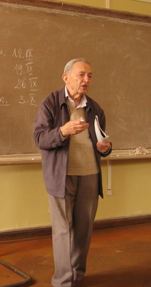
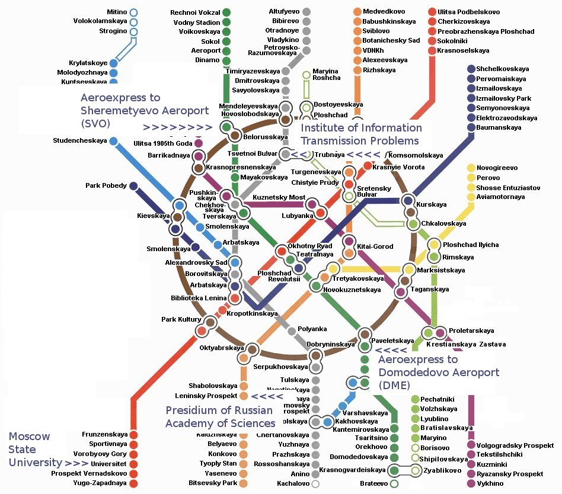
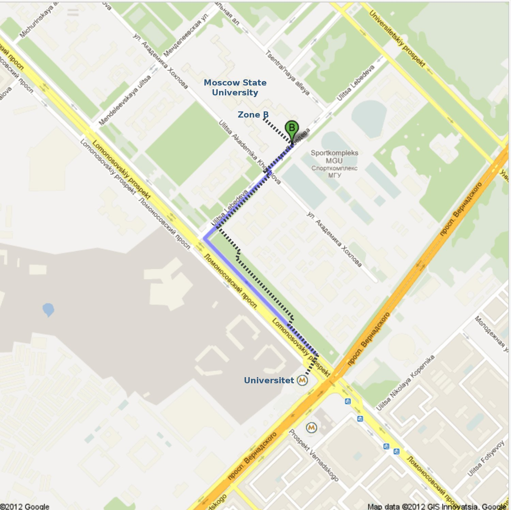
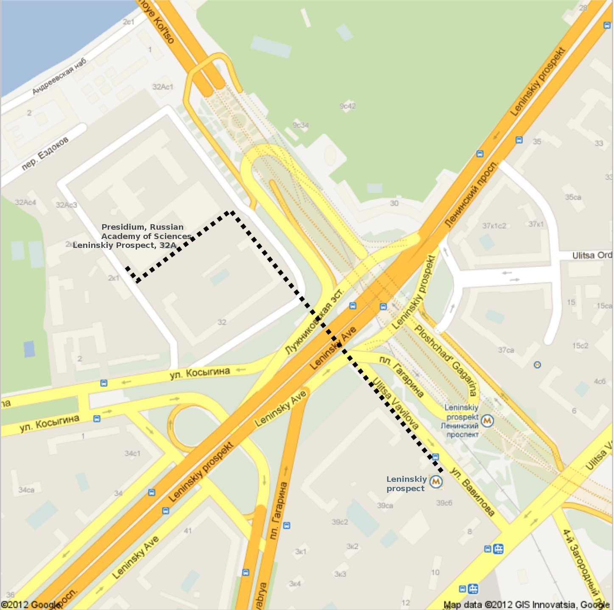
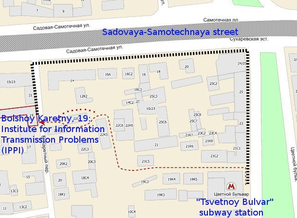

|
 |
|
International conference
Partial Differential Equations and Applications
in Honour of Mark Vishik on the occasion of his 90th birthday
IITP, Moscow, Russia
June 4-7, 2012
www.dynamics.iitp.ru/vishik
|
Public transportation
When you arrive:
how to get from Moscow airports to
the hotel at Moscow State University
-
When you arrive at Domodedovo Airport (DME)
or Sheremetyevo Airport (SVO):
Do not count on a taxi
(there is still no official taxi,
and you are strongly advised against private cars).
The best is to go to town by
AEROXPRESS TRAIN,
which is much faster, cheaper, and safer.
Keep in mind that the roads are often jammed.
The train goes every half an hour.
Instead of buying a "standard" one-way ticket (320 RUB),
get "Plus Metro": one-way Aeroexpress ticket + 1 subway trip (350 RUB).
At the AEROEXPRESS ticket booth, you can pay for this ticket with
cash or a credit card.
-
The non-stop trip takes about 45 minutes.
Along the way,
remove the baggage ID cards from your lagguage;
now you look like a common person.
-
Once in Moscow, follow the signs to a metro station
("Paveletskaya" on the green line if arriving from Domodedovo,
"Beloruskaya" on the green line if arriving from Sheremetyevo).
Each of these stations is at the intersection
of the green line and brown (loop) line.
-
If you have not bought "Plus Metro" card,
you can buy a subway fare at the ticket booth.
A card for 10 rides costs 265RUB (7EURO).
You can get roubles from a cash machine
near the ticket booth at nearly every metro station.

Click the image to enlarge
-
Once on the green line,
take a train to "Teatralnaya" station,
which is in the center of the city.
-
On "Teatralnaya" station,
take a transfer to the red line ("Okhotny Ryad" station).
The stairs are located in the middle of the platform
and then there is a long walk to "Okhotny Ryad".
If you have much lagguage,
it is more convenient to
take the exit escalator at the
northern end of the platform
(direction BOLSHOY THEATER),
there is a much shorter walk,
and then -- on your left --
a downwards escalator to "Okhotny Ryad" (the red line).
-
Once on the red line ("Okhotny Ryad"),
go to "Universitet" station (south-west from the center).
The trip is about 18 minutes.
-
When you arrive at the "Universitet" metro station,
take the exit escalator at the end of the platform
which is at the rear of your train;
it will be to your left when you exit the train.
(Avoid the exit in the middle of the platform.)
-
Now you can
walk from the metro station "Universitet" to Moscow State University,
which will be seen in the northern direction.

Click the image to enlarge
Be very careful and always follow the crowd when crossing roads.
Traditionally, Moscow drivers
worry about pedestrians' well-being
not as much as pedestrians themselves.
-
When you reach the university (in 15-20 minutes),
go to "ZONE B" checkpoint
at the south-eastern side of the university.
There, present your passport
and say that you are on the list of
conference participants.
(There may be our representative on duty
who would help you.)
Enter the building,
and go to the office of hostels.
Before 8AM, go to Room 1; after 8AM, go to Room 5.
Here is a map of Zone B.
-
Alternatively, you can go one stop by a bus or trolley.
The driver will sell you a ticket for some 25-30 roubles.
Here are the maps
where you take the bus
and
where you exit the bus.
Frequent visitors to the university know better and walk.
-
See also
the map at Yandex.
June 4, 2012:
Presidium of the Russian Academy of Sciences
On june 4, 2012, we meet
at the Presidium of the Russian Academy of Sciences,
Leninskiy Prospect 32A.
This is near the metro station "Leninsky Prospect"
on the orange line.
There will be a conference bus from the checkpoint of Zone B
of Moscow State University to Russian Academy of Sciences.
The bus will arrive at 8:00AM, the boarding is scheduled
to commence at 8:15, the bus will depart at 8:30.
The coordinator is Alexander Demidov, alexandre.demidov@mtu-net.ru
There will be a minivan from Petrovsky Palace Hotel
to Russian Academy of Sciences.
The minivan will arrive at 8:00 AM and will leave at 8:15.
The coordinator is Andrey Komech, andrey.komech@gmail.com
To get to the Russian Academy of Sciences on your own:
Please exit the station in the direction
away from the center of the city.

Click the image to enlarge
See also the map at Yandex.
June 5-7, 2012:
Institute of Information Transmission Problems
On June 5-7, we meet at the
Institute of Information Transmission Problems,
B. Karetny, 19.
This is near the metro station "Tsetnoi Bulvar"
on the gray line.

Click the image to enlarge
{kind=link}
{kind=link}